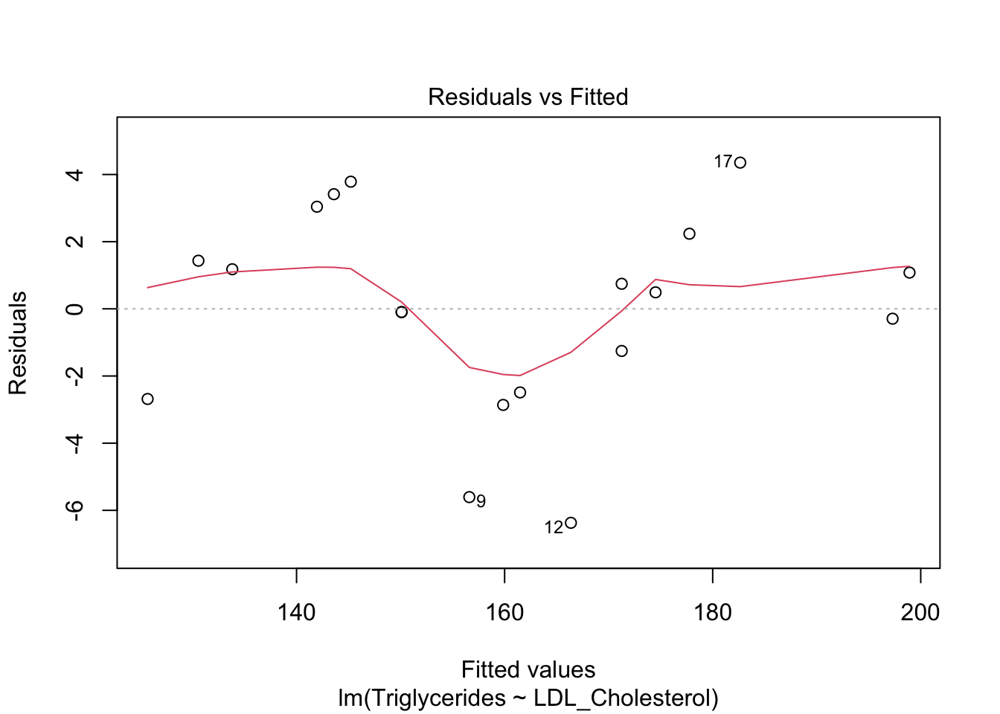
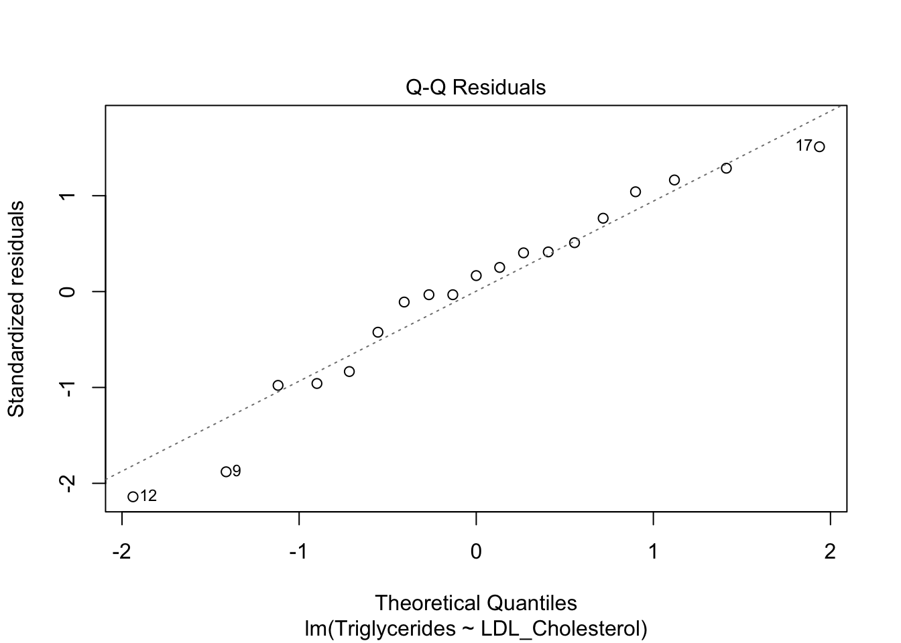
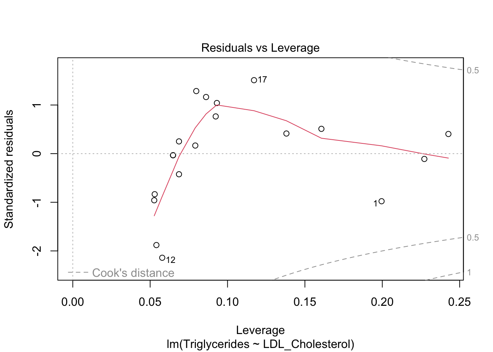
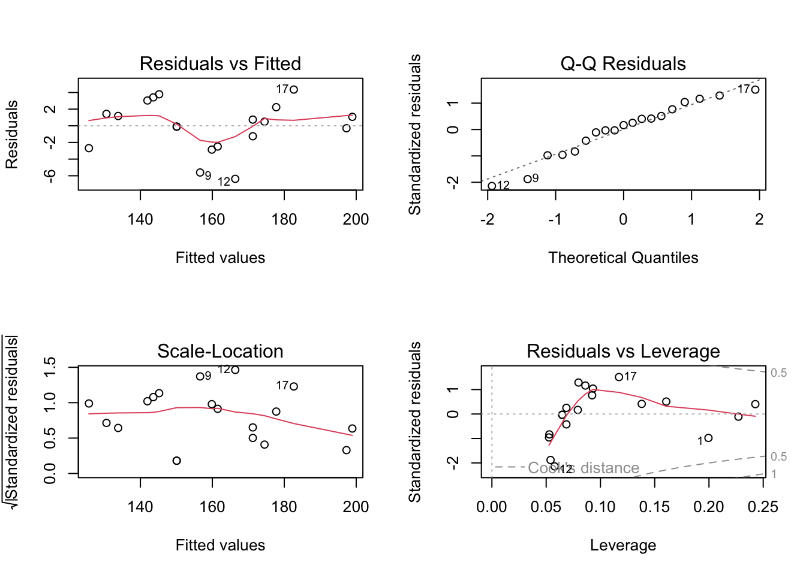
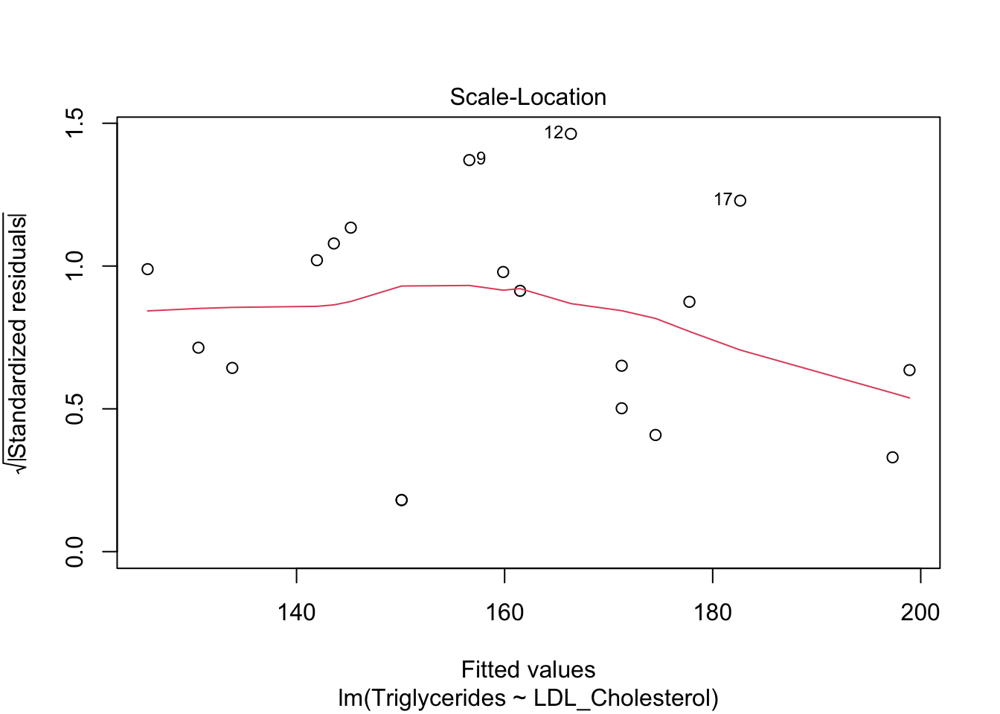

library(tidyverse)
library(rio)
library(psych)
library(pastecs)
library(rstatix)
library(GGally)
library(corrplot)Statistics Workshop 3
Testing for Relationships between Variables
This workshop introduces you to analysing:
- Correlations: analysing the strength of an association;
- Linear Regression for two variables: analyzing the relationship or influence of one variable (predictor or independent) on another (dependent);
- Multiple Regression: analyzing the influence of more than one predictor variable on a dependent variable.
First, open RStudio and a new R Script file. Load the packages that you will be using:
Click to see packages to load (Copy and paste to Script editor)
NB If you get a message saying that a package does not exist, you need to install it first with install.packages("name_of_package")
SELECT THE RELEVANT TAB BELOW FOR YOUR DATA
Click to read the Introduction
This example analyzes the strength of an association between two variables measured in 19 different people: LDL Cholesterol levels and Triglycerides. Correlations can be carried out for more than just two variables, and a second example correlates the strength of the association between 3 variables: Triglycerides, LDL Cholesterol and Glucose.
A. CORRELATION OF TWO VARIABLES
1. Download the Excel file Correlation_2_var_data.xlsx from Canvas and save it to a folder that you will use as your working directory (either in RStudio Cloud or in RStudio on your own laptop).
Upload excel file to RStudio Cloud
- Check that the data in the file is ‘tidy’
- Upload it to RStudio Cloud, saving it to a folder for this Statistics Workshop 3 session (NB If you are using RStudio on your own laptop, simply save the excel file to a relevant folder on your laptop).

- In RStudio, locate the file and set the folder location as your working directory.
2. Import the file to RStudio and store it as a dataframe called corr2var.
The head() function shows us the first 6 rows.
The summarise_all(class) function shows us what type of data is stored in the dataframe. Both are numeric which is what we want.
corr2var <- import("Correlation_2_var_data.xlsx")
head(corr2var)
corr2var |>
summarise_all(class)- 1
- Imports the excel file to a dataframe object callsed ‘corr2var’
- 2
- Shows the first 6 rows of the dataframe
- 3
- Shows the types of data in each column
3. Explore the data:
(a) get the descriptive statistics
corr2var |>
describe()(b) test if the data is normally distributed
corr2var |>
shapiro_test(Triglycerides, LDL_Cholesterol)
4. Produce a scatter plot to see if the data seems to form a linear relationship
corr2var |>
ggplot(aes(Triglycerides, LDL_Cholesterol)) +
geom_point(size = 2, colour = "blue") +
labs(title = "Scatter plot of Triglycerides vs LDL Cholesterol",
y = "LDL Cholesterol (mg/dL)",
x = "Triglycerides (mg/dL)"
)
Click to see the scatter plot

5. The correlation
NB If at least one of the variables is NOT normally distributed, use method = "spearman" in the script below.
corr2var |>
cor_test(Triglycerides, LDL_Cholesterol, method = "pearson")B. CORRELATION OF THREE VARIABLES
1. Download the Excel file Correlation_3_var_data.xlsx from Canvas and save it to the same folder as above so that it is in your working directory (either in RStudio Cloud or in RStudio on your own laptop).
Upload excel file to RStudio Cloud
- Check that the data in the file is ‘tidy’
- Upload it to RStudio Cloud, saving it to a folder for this Statistics Workshop 3 session (NB If you are using RStudio on your own laptop, simply save the excel file to a relevant folder on your laptop).

- In RStudio, locate the file and set the folder location as your working directory.
2. Import the file to RStudio and store it as a dataframe called corr3var.
The head() function shows us the first 6 rows.
The summarise_all(class) function shows us what type of data is stored in the dataframe. All three columns contain numeric which is what we want.
corr3var <- import("Correlation_3_var_data.xlsx")
head(corr3var)
corr3var |>
summarise_all(class)- 1
- Imports the excel file to a dataframe object callsed ‘corr3var’
- 2
- Shows the first 6 rows of the dataframe
- 3
- Shows the types of data in each column
3. Explore the data:
(a) get the descriptive statistics
corr3var |>
describe()(b) test if the data is normally distributed
corr3var |>
shapiro_test(Triglycerides, LDL_Cholesterol, Glucose) 4. Produce a matrix of scatter plots and correlation coefficients
corr3var |>
ggpairs()5. The correlation
Again, if any of the variables are not normally distributed, use method = "spearman" in the script below.
NB In the script below, ‘Triglycerides:Glucose’ means include all variables in the dataframe from Triglycerides (the 1st column) to Glucose (the 3rd column). Alternatively, you can type the name of each variable heading separated by a comma ‘,’.
The code to do the correlation is:
corr3var |>
cor_test(Triglycerides:Glucose, method = "pearson")This can also shown in nice graphical display of correlation coefficients:
corr3var |>
cor() |>
corrplot(
method = 'circle',
type = "upper",
diag = F,
order = "original",
tl.col = "black",
tl.srt = 45)
Click to read Introduction
This example analyses the nature of the relationship between Triglycerides and LDL Cholesterol, and to see if we can predict Triglyceride values (the dependent variable) from the LDL (the independent or predictor variable). It uses regression analysis to create an equation for a predicted linear relationship and analyses how good it is as an equation to predict Triglycerides from LDL.
1. You will be using the same data example as for the bivariate correlation example. If you have not already downloaded the data file, download the Excel file Correlation_2_var_data.xlsx from Canvas and save it to a folder that you will use as your working directory (either in RStudio Cloud or in RStudio on your own laptop).
In RStudio, locate the file and set that location as your working directory.
2. Import the file to RStudio and store it as a dataframe called lin_regr.
The head() function shows us the first 6 rows.
The summarise_all(class) function shows us what type of data is stored in the dataframe. Both are numeric which is what we want.
lin_regr <- import("Correlation_2_var_data.xlsx")
head(lin_regr)
lin_regr |>
summarise_all(class)- 1
- Import the excel file and store it as a dataframe called ‘lin_regr’.
3. Explore the data
a) Produce a scatter plot with a line of best fit through the data
Note I am placing Triglycerides on the y-axis because this is the dependent variable that we want to predict.
lin_regr |>
ggplot(aes(x=LDL_Cholesterol, y=Triglycerides)) +
geom_point(size = 3, colour = "blue") +
geom_smooth(method = lm, se = FALSE) +
labs(title = "Scatter plot and fitted line for LDL Cholesterol data")- 1
- Send the sata to the ggplot function with LDL on the x-axis & Triglycerides on the y-axis
- 2
- Format the data as blue points
- 3
- Fit a line of best fit to the points
b) Check for normality of distribution for the dependent variable
lin_regr |>
shapiro_test(Triglycerides)- 1
- Send the lin_regr data to the Shapiro-Wilk test, and test the Triglycerides variable (the deprendent variable) for a normal distribution.
4. The regression analysis
Note: In the script the first variable is the dependent variable. It reads as ‘regress Triglycerides ’by’ LDL_Cholesterol’.
The regression model fit results are stored in an object called ‘regr_fit’ which we then summarise to see the results.
regr_fit <- lm(Triglycerides ~ LDL_Cholesterol, data = lin_regr)
regr_fit |>
summary()- 1
- This means: regress Triglycerides (the dependent variable) by LDL_Cholesterol (the predictor). The data is in the lin_regr dataframe. Store the regression result in an object called ‘regr_fit’.
- 2
- View the contents of the new ‘regr_fit’ object.
5. Regression diagnostics
a) Standardised residuals should be normally distributed.
The first thing to do is to calculate the standardised residuals, using the regr_fit model results we created above, and store them in an object called ‘st_resid’:
st_resid <- regr_fit |>
rstandard() |>
as_tibble()- 1
- Send the regr_fit object to the rstandard() function which calculates the standardised residuals. Store the results as an object called st_resid
Produce a histogram to view the standardised residuals visually and test with Shapiro Wilk test.
A histogram:
st_resid |>
ggplot(aes(x = value)) +
geom_histogram(binwidth = 0.5, fill = "blue", colour = "black", alpha = 0.5) +
labs(title = "Histogram of standardised residuals",
x = "Standardised residuals")- 1
- Send the standardised residuals (st_resid) to the ggplot function
- 2
- Produce a histogram with blue bars and black outline
Test the standardised residuals to see if they are normally distributed:
st_resid |>
shapiro_test(value)
b) Diagnostic plots
The following will produce the diagnostic plots for the regr_fit regression model.
plot(regr_fit)Run command and then hit return by the prompt in the Console. Press return 4 times and the 4 graphs will appear in sequence.
Click to see the diagnostoc plots




- Residuals vs. Fitted - should be even scatter of points around 0. Residuals should have no pattern in relation to predicted (fitted) values. Fitted line should be reasonably close to straight flat line (residuals all about the same = homoscedasticity). Here, some departure, so might not be quite linear.
- Normal Q-Q - diag line = normal distribution of residuals. The points should be close to the diagonal line.
- Scale-Location - line should be horizontal flat. Similar to Residuals vs Fitted.
- Residuals vs. Leverage - dotted lines = Cook’s Distance. If any points are near or cross the dotted lines, they have strong influence on the model.
c) Examine data for any data points that have a strong influence on the regression analysis.
inflm <- regr_fit |> influence.measures()
summary(inflm)- 1
- Send the regression model (regr_fit) to the influence.mearures() function & store the results in an object called ‘inflm’.
- 2
- View the contents of the new inflm object
6. Re-do the scatter plot but add the equation and R-square
Scatter plot with fitted line
lin_regr |>
ggplot(aes(LDL_Cholesterol, Triglycerides)) +
geom_point(size = 3, colour = "blue") +
geom_smooth(method = lm, se = FALSE) +
labs(title = "Scatter plot and fitted line for LDL Cholesterol data") +
annotate("text", label = "Triglycerides = -48.46 + 1.63(LDL Cholesterol)", x = 125, y = 195, colour = "black") +
annotate("text", label = "R-squared = 0.979", x = 125, y = 190, colour = "black")- 1
- Adds a line of best fit to the scatter plot
- 2
- Annotates the graph to add the equation of the line
- 3
- Annotates the graph to add the R-squared value. The values 125 & 190 position the text on the x & y axes.
Click to read Introduction
This example analyses the nature of the relationship between Triglycerides and more than one predictor: LDL Cholesterol, HDL Cholesterol and Glucose to see if they can be used together to accurately predict Triglyceride levels. It uses regression analysis to analyse which predictors should be included in the model to predict Triglycerides and to create an equation for the best model.
1. Download the Excel file Mult_Regr_data.xlsx from Canvas and save it to a folder that you will use as your working directory (either in RStudio Cloud or in RStudio on your own laptop).
Upload excel file to RStudio Cloud
- Check that the data in the file is ‘tidy’
- Upload it to RStudio Cloud, saving it to a folder for this Statistics Workshop 3 session (NB If you are using RStudio on your own laptop, simply save the excel file to a relevant folder on your laptop).

- In RStudio, locate the file and set the folder location as your working directory.
2. Import the file to RStudio and store it as a dataframe called mlr.
The head() function shows us the first 6 rows.
The summarise_all(class) function shows us what type of data is stored in the dataframe. Both are numeric which is what we want.
mlr <- import("Mult_Regr_data.xlsx")
head(mlr)
mlr |>
summarise_all(class)- 1
- Import the excel file to R and store it in a dataframe object called ‘mlr’.
3. Explore the data
a) Matrix of correlation coefficients, scatter plots and distributions
mlr |>
ggpairs()
b) Test that the dependent variable (the one to be predicted; Triglycerides) is normally distributed
mlr |>
shapiro_test(Triglycerides)4. The multiple regression
We will use a method of multiple regression called stepwise regression. This runs a series of different models, including and excluding predictor variables, to find the model that has the best and statistically significant fit to the data.
a)Stepwise regression to select the best model: This compares models using the Aikaike Information Criterion (AIC) method.
Stepwise regression here starts from the ‘null model’ (with only the intercept included), and then runs through the various models, adding and removing predictors, to find which model best predicts the dependent variable, using AIC to compare models. Select the model with the lowest AIC value.
model.null = lm(Triglycerides ~ 1, data = mlr)
model.full = lm(Triglycerides ~ LDL_Cholesterol + HDL_Cholesterol + Glucose, data = mlr)
step(model.null,
scope = list(upper=model.full),
direction="both",
data=mlr)- 1
- The null model which defines only the constant intercept
- 2
- The full model with all variables included
- 3
- Run the stepwise regression
This shows that the model Triglycerides~LDL+HDL (ie only LDL and HDL included in the model, and not Glucose) is best model with AIC=40.9.
The call function at the end provides the coefficients to construct the equation of the model which is:
Triglycerides = 100.76 + 0.90(LDL) - 1.21(HDL)
HOWEVER, we have already seen that LDL and HDL predictors are strongly correlated (see the correlation matrix above). This is an example of co-linearity in which both predictors provide very similar information to predict the dependent variable. In such cases it is often better to exclude one of the predictors, leaving the one with the strongest infliuence on Triglycerides.
In this case, it is probably best to exclude HDL Cholesterol (LDL had the higher correlation coefficient with Triglycerides).
b) Run the regression analysis for the best selected model: We now need to run the regression analysis on the best model and save the results of the regression in an object called model.FINAL):
model.FINAL <- lm(Triglycerides ~ LDL_Cholesterol, data = mlr)
model.FINAL |>
summary()- 1
- Regression of Triglycerides by LDL predictor only; results stored in an object called ‘model.FINAL’
- 2
- View the results of the regression
and the final equation of the model is:
Triglycerides = -48.46 + 1.63(LDL)
- R2 = 0.979; the model explains 97.9% of the variation in the dependent data
- The model fits the data (ie the predictors explain the variation in the dependent variable) with high statistical significance; Model fit P < 5.91x10-16
5. Diagnostics
a) Root mean square error (rmse)
This analyses the overall size of the residuals of each model, and it is often quoted for a regression model. It is the standard deviation of the residuals, and is a measure of how spread out the residuals are. If all points fall on the fitted line, rmse = 0; so, the smaller the rmse, the better the regression.
One could calculate the rmse for each possible model and use them to select the best model; the model with the lowest value of rmse is the best one. However, we have carried out a stepwise regression in which the AIC was used to select the best model, so we will use that.
Here, I am going to only calculate the rmse for the best model that the stepwise regression suggested (ie the model with only LDL as the predictor).
Remember, we have stored the results of this regression in an object called model.FINAL above:
mseLDL <- mean(model.FINAL$residuals^2)
rmseLDL <- sqrt(mseLDL)
rmseLDL- 1
-
Calculate the mean of the squared residuals from the
model.FINALobject that contains the results of the regression analysis. Store inmseLDL - 2
-
Calculate the square root of the mean; store in
rmseLDL - 3
- View the rmse value
b) Diagnostic plots for the best selected model, Triglycerides = -48.46+1.63(LDL).
The results for the selected model has been stored in an object called model.FINAL; run the following script and then hit return at the prompt in the Console.
Hitting return 4 times will result in the 4 graphs being shown.
plot(model.FINAL)
Click to see the diagnostic plots (there is a brief description of each at the bottom)



- Residuals vs. Fitted - should be even scatter of points around 0. Residuals should have no pattern in relation to predicted (fitted) values. Fitted line should be reasonably close to straight flat line (residuals all about the same = homoscedasticity). Here, some departure, so might not be quite linear.
Rows 1, 12 and 17 have the 3 highest residuals. - Normal Q-Q - diag line = normal distribution of residuals. The points should be close to the diagonal line.
- Scale-Location - line should be horizontal flat. Similar to Residuals vs Fitted.
- Residuals vs. Leverage - dotted lines = Cook’s Distance. If any points near or cross dotted lines, have strong influence.
c) Examine the selected regression model for any data points that have a strong influence on the regression analysis.
inflmlr <- model.FINAL |> influence.measures()
summary(inflmlr)This prints out possible influential predictor values.